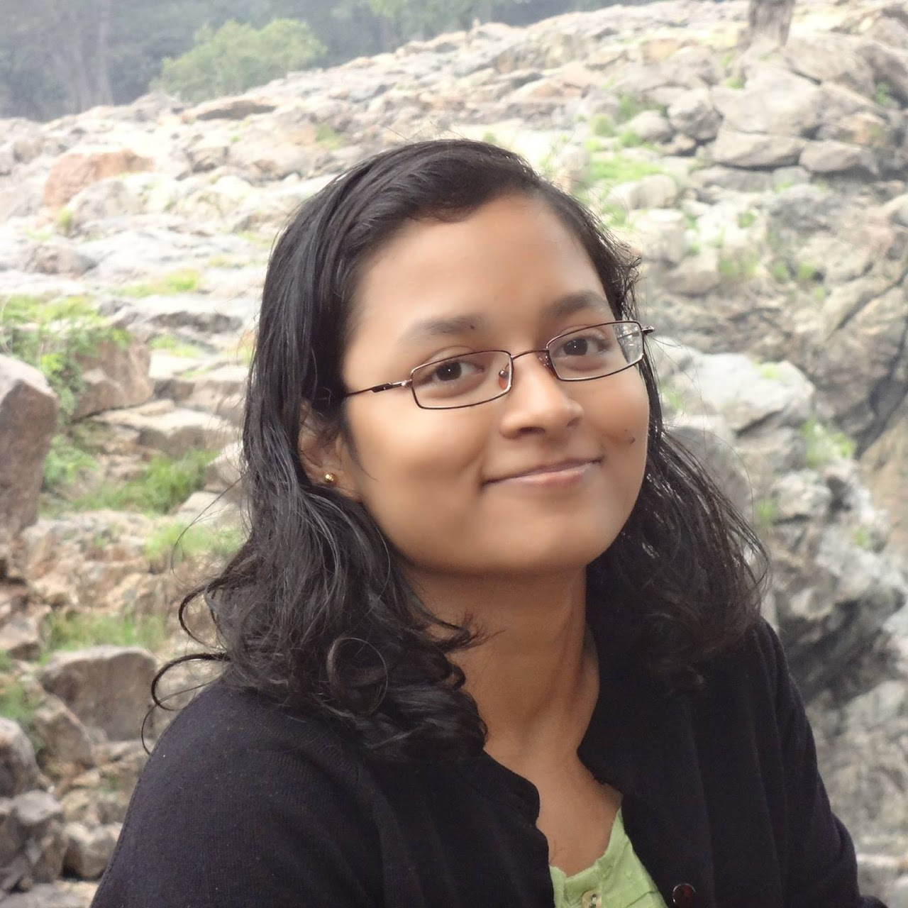

Computer Vision and Artificial Intelligence Research Lab (CVAIR) at Marshall University, led by Dr. Ananya Jana.
We focus on Artificial Intelligence based methods of natural and biomedical image analysis.

Research Interests
Computer Vision
Artificial Intelligence
Biomedical Image Analysis
Lab News
2025
Congratulations to Anastasiia Sukhanova on successfully defending her Master's thesis, “Leveraging Vision-Language Models for Advancing Digital Dentistry”.
I am serving as an Area Chair for MIDL 2026.
Congratulations to Aniruddha Maiti, Satya Nimmagadda, Kartha Veerya Jammuladinne, Niladri Sengupta on the acceptance of their paper “Convergence of Outputs When Two Large Language Models Interact in a Multi-Agentic Setup” to the 2025 International Conference on Large Language Models.
We received the NAIRR Pilot Classroom Award and NSF ACCESS EXPLORE credits for the course "Generative AI"!
Congratulations to Ganesh Paudel for receiving the Undergraduate Student Creative Discovery & Research Awards (Summer 2025)! ($4000)
Congratulations to Jackson Drummond for receiving the Undergraduate Student Creative Discovery & Research Awards (Fall 2025)! ($1750)
Congratulations to Tanner Wick for receiving the NASA WV Undergraduate Fellowship (2025-26)! ($5000)
Congratulations to Daron Weekley, Jace Duckworth and Anastasiia Sukhanova on the acceptance of their paper “Evaluating the Suitability of Different Intraoral Scan Resolutions for Deep Learning-Based Tooth Segmentation” to ASEE North Central Section.
Congratulations to Temesgen Alema Tikure, Zichun Wang, Samuel Adewumi and Anastasiia Sukhanova on the acceptance of their paper “Comparative Analysis of OpenAI GPT-4o and DeepSeek R1 for Scientific Text Categorization Using Prompt Engineering” to ASEE North Central Section.
We received the NAIRR Pilot Classroom Award and NSF ACCESS EXPLORE credits for the course on "Deep Learning in Medical Imaging"!
2024
Congratulations to Lizana Imran for receiving the Undergraduate Student Creative Discovery & Research Awards (Spring 2025) from Marshall University ($1750) for her project.
Congratulations to Anastasiia Sukhanova for receiving the Graduate Student Creative Discovery & Research Awards (Spring 2025) from Marshall University ($1750)!